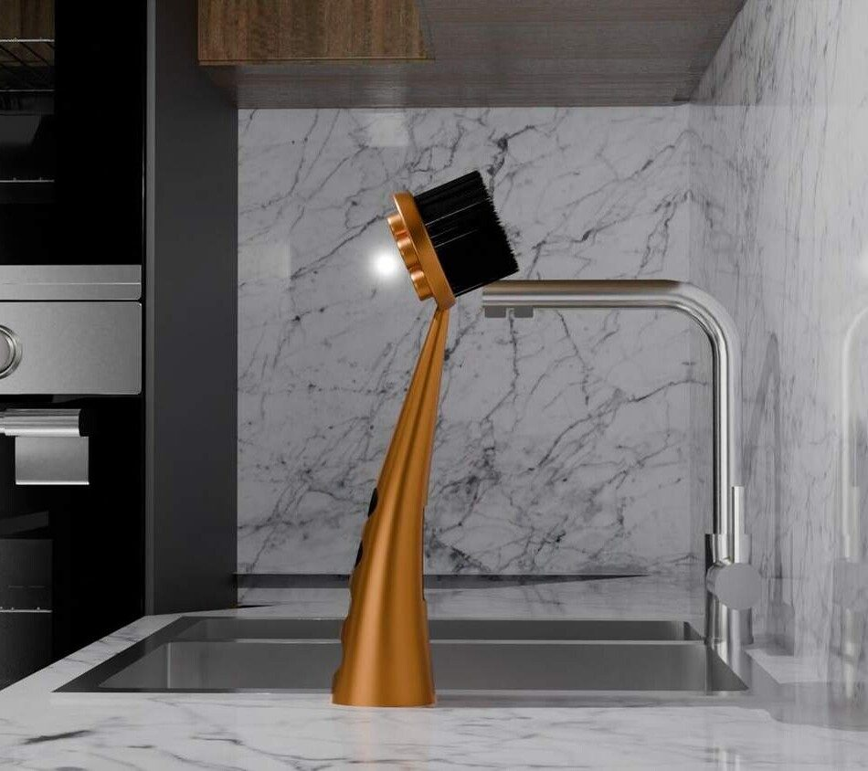
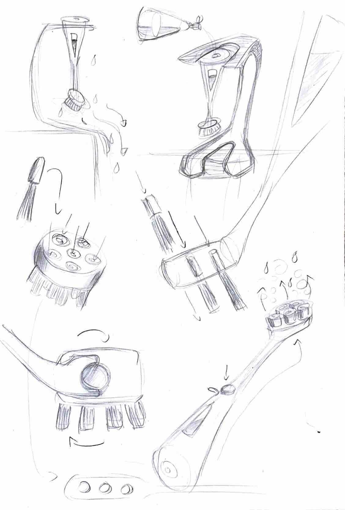
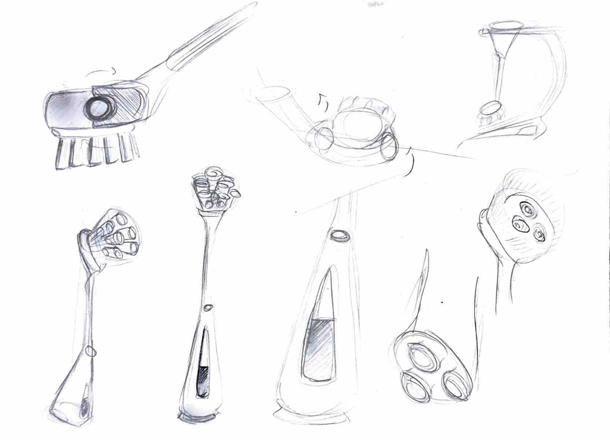
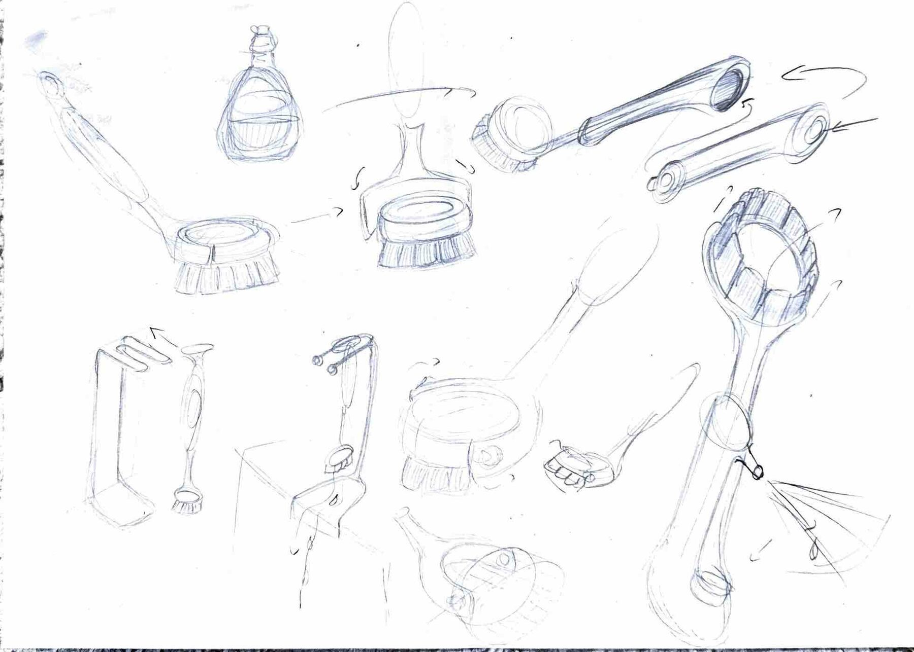
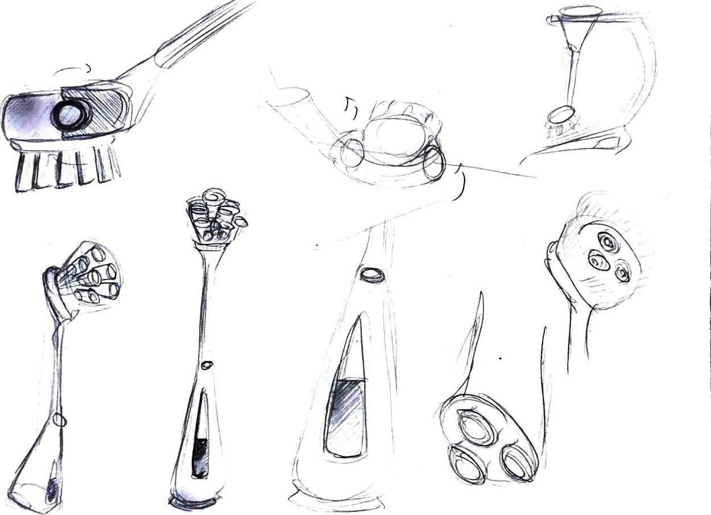
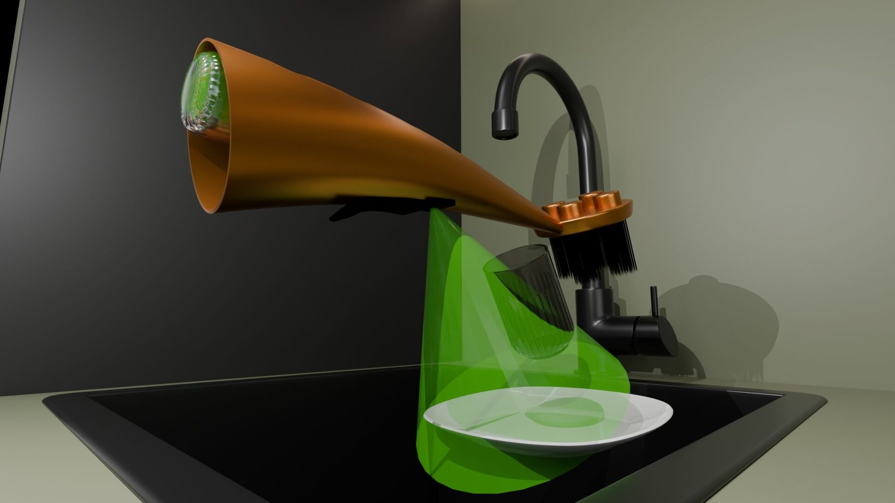
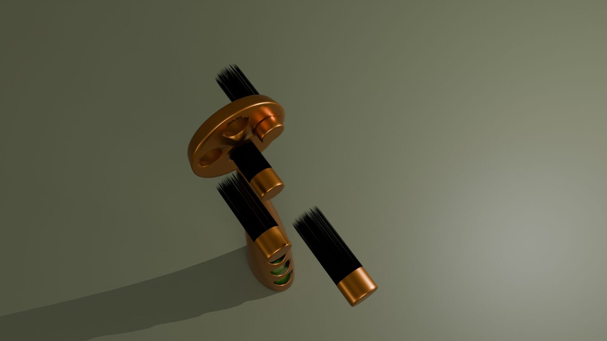
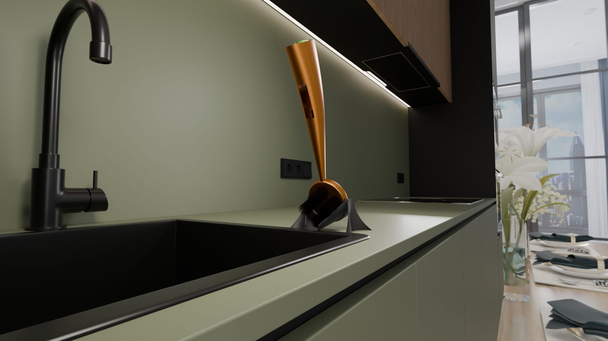
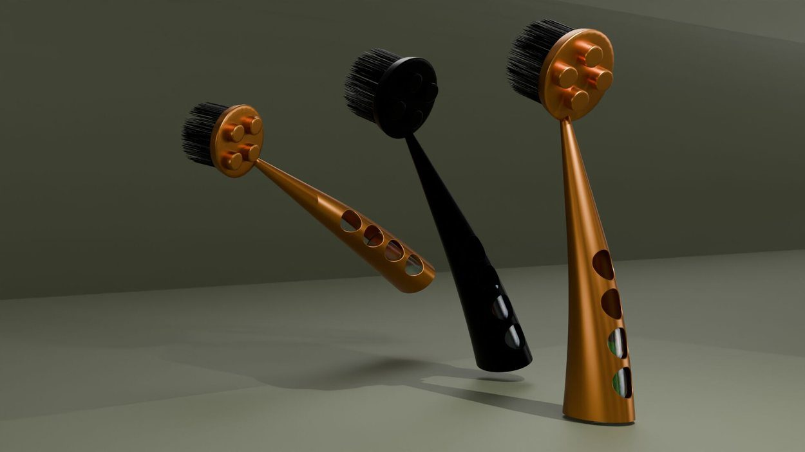

Integrated soap dispenser
A detergent tank in the handle replaces the plastic bottle. Round portholes show the fill level, and a button releases just the right amount of soap.
05 / Product design
The modular dish brush: a kitchen accessory worth leaving out, with an integrated soap tank, replaceable heads and its own drying stand.

Dish brushes lie in the wet sink, collect food residue and start to smell, while plastic detergent bottles bring advertising into otherwise calm kitchens.




A detergent tank in the handle replaces the plastic bottle. Round portholes show the fill level, and a button releases just the right amount of soap.

Individually replaceable brush heads snap into place, so the handle lasts and only the worn part is changed.

The stand holds the brush upside down, protects the bristles and lets water drain straight into the sink.

